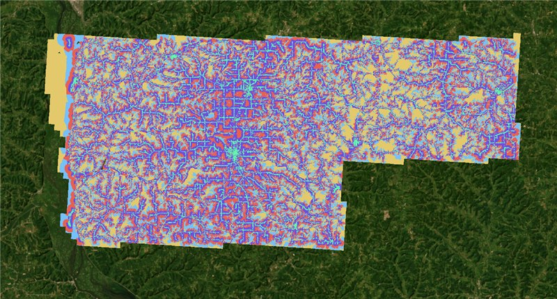

Rugged SystEMS
A GIS application evaluates off-road access for rural emergency responders using terrain, slope, and hydrology.
My role: I led development, modeled terrain suitability from LiDAR, and presented the project.
Project details
- Conceptualized and led the development of a GIS-based emergency response application that evaluates off-road accessibility using terrain, slope, and hydrologic constraints to support rural EMS operations
- Applied raster analysis on LiDAR-derived elevation data to calculate terrain roughness, develop suitability models, and package analysis outputs for offline navigation
- Presented the winning project to 600+ Esri employees, interns, and public attendees, communicating the application's GIS methodology and emergency response use case
Final cost-distance layer shown as a visual reference. The app used a separate setup for A* routing.